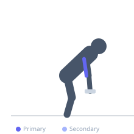
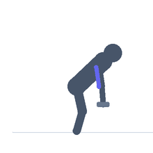

Exercise guide / Tricep Kickback
Tricep Kickback
The tricep kickback is a dumbbell isolation exercise for the triceps performed in a bent-over position with the upper arm held parallel to the floor. The forearm extends backward past the hip to create elbow extension, with peak contraction occurring at full extension. With the shoulder in a relatively neutral position, the lateral and medial heads of the triceps are the primary movers during this strict isolation movement.
Primary muscles
triceps lateral head
triceps medial head
Secondary muscles
triceps long head
Stabilizers
longissimus
latissimus dorsi
Equipment
Dumbbell (Fixed)
Optional
Flat Bench


Starting position
- Hinge forward at the hip until the torso is nearly parallel to the floor. Place one hand and knee on a bench (or stand with both feet staggered). Hold a dumbbell in the working hand. Raise the working upper arm until it is parallel to the floor, elbow bent at 90 degrees.
Setup
- Place one hand and same-side knee on a bench for support, or hinge over with a staggered stance. The upper arm must stay parallel to the floor throughout.
Steps
- Step 1: Hinge forward, upper arm parallel to the floor, elbow bent at 90 degrees. Hold the dumbbell.
- Step 2: Keep the upper arm pinned in place.
- Step 3: Exhale and extend the elbow by moving only the forearm backward until the arm is fully extended and parallel to the floor.
- Step 4: Hold the peak extension for a moment, then inhale and return the forearm to 90 degrees.
Coaching cues
- Pin your elbow to your side like you're holding something under your armpit
- Full lockout at the back — straighten the arm completely
Breathing
- Exhale as you extend backward; inhale as you return.
Range of motion
- Full elbow extension at the back; return to 90 degrees elbow bend at the front.
Tempo
- 1-2-2-0 (hold 2 seconds at peak extension)
Common mistakes
- Dropping the upper arm during the movement — it must stay parallel to the floor
- Using too heavy a dumbbell, causing the torso to rotate
Safety
- Keep the spine neutral — do not round the lower back when hinging
Training
- hypertrophy: 10–20 reps
- endurance: 15–25 reps
- hypertrophy: 3–4 sets
- endurance: 2–3 sets
- Rest: {'hypertrophy': 60, 'endurance': 45}